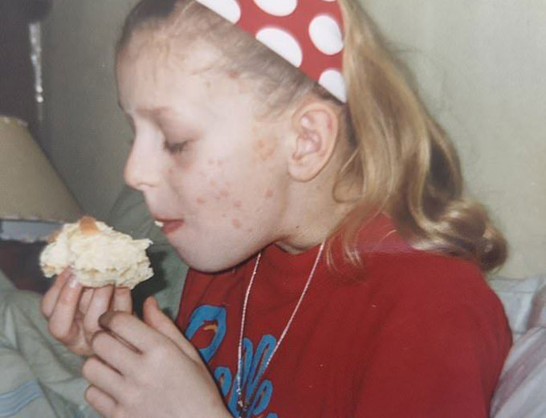

Łuszczycę, jak okazało się, można wyleczyć
Dzień dobry wszystkim, mam na imię Lisa, mam 31 lat. Chcę podzielić się szczerą historią o walce z łuszczycą. Jak zrujnowała moje lata szkolne, jak próbowali ją leczyć i do czego to doprowadziło. Gdyby nie mój wujek, który znalazł sposób na pozbycie się łuszczycy - nie poradziłabym sobie z tą chorobą. Ta historia pomoże ci rozpocząć leczenie od razu z odpowiednich kroków, zaoszczędzić czas, pieniądze i zdrowie.
Chcę podzielić się małą szczerą historią walki z łuszczycą. Jak zrujnowała moje lata szkolne, jak próbowali ją leczyć i do czego to doprowadziło. Ale najważniejsze jest to, że się jej pozbyłam! Ta historia pomoże uniknąć błędów i natychmiast rozpoczynając leczenie od razu od właściwych kroków.
Przedhistoria szkolna
W podstawówce byłam bardzo towarzyską, wesołą i radosną dziewczyną. Ale potem wszystko się zmieniło. Zaczęli ze mnie kpić, unikać, śmiać się, często doprowadzając do łez - wszystko to z powodu łuszczycy.
łuszczyca, stopień 4
Doświadczyłam wtedy prawdziwego stresu. Pamiętam takie ujęcia, kiedy siedziałam w kącie długiego korytarza, rozczesując ręce do mięsa, brudząc krwią wyprasowaną i upraną przez matke bluzkę, a jednocześnie płacząc.
Kiedy znecania się na de mna przekroczyły wszystkie granice, nauczyciele prowadzili rozmowy z klasą, mówiąc, że Lisa potrzebuje wsparcia, ma poważną chorobę i nie jest zaraźliwa. Ale rozmów wystarczało tylko do tej chwili, aż nauczyciel wyjdzie, i jeszcze bardziej się na de mną znęcali. Ponieważ rozmowy zabierały kolegom z klasy cenny wolny czas.

Bliżej 16 roku życia hormony zaczęły grać we wszystkich. Koledzy z klasy zaczęli się malować, nosić spódniczki, tuszować pryszcze. Zaczęłam też się malować i łuszczyca nie wytrzymała tej sztuki - cała moja twarz została ukryta jaskrawoczerwonymi plamami. Po takim incydencie błagałam matkę pójść do szpitala i wypisać zwolnienie lekarskie na całe życie, tylko po to, żeby nie chodzić do szkoły. Ale dali tylko na kilka tygodni.
Szpitale. Leki. Horror.
Gdy tylko pojawiły się pierwsze płytki łuszczycy, rodzice zaczęli mnie włóczyć po szpitalach. Na wizycie u lekarza zawsze liczyłam na coś dobrego, słowa nadziei, ale widząc smutne miny rodziców i poważne twarze lekarzy zrozumiałam, że wszystko jest bardzo źle. Wtedy to po raz pierwszy dowiedziałam się z rozmowy o takich chorobach, jak HIV i żółtaczka.
To było bardzo przerażające. Ciało nieustannie swędziło, odrywałam kawałki skóry, pojawiały się krwawiące rany. Rodzice nie opuszczali rąk. Ze strachem i przerażeniem brali mnie za rękę do lekarzy, konsultowali się, próbowali jakoś mi pomóc.

Po wizycie u każdego lekarza biegliśmy do apteki i kupowaliśmy wszystko, co napisał na kartce papieru. W domu zmuszali mnie do smarowania różnych maści i brać garść białych tabletek. Dla wzmocnienia efektu rodzice dodali też do swojego arsenału tradycyjnych środków - kąpiel z ziołami i śmierdzące mydło.
Komplikacje
Kurs leków hormonalnych dał sens - płytki trochę zniknęły. Cena na to była wysoka: zacząłem przytyć. Zostałam zmuszona do przejścia na dietę, która sprawiła, że wszystkie słodycze z domu zniknęły raz na zawsze. Ale ograniczenie pozwoliło spowolnić tempo przyrostu masy ciała.
Wtedy doszłam do około 80 kilogramów. Po badaniach okazało się, że leki dały silne powikłanie w wątrobie. Po jakimś czasie całe ciało zaczęło pokrywać się ogromnymi czyrakami.

Lekarze zaalarmowali, dali mnie na miesiąc i umieścili w szpitalu. Byłam wtedy tak bardzo zadowolona, że nie będę chodziła do szkoły, ale kiedy zaczęli mi robić zastrzyki, transfuzje krwi i codziennie poddawać niekończącym się badaniom - wciąż byłam zadowolona, ponieważ jest to dużo lepsze, niż szkoła. Nawiasem mówiąc, jedzenie tam było okropne, z powodu czego straciłam prawie wszystkie dodatkowe kilogramy.
Po szpitalu choroba przebiegała spokojnym rytmem. Ukończyłam szkołę, wstąpiłam na uniwersytet
Uniwersytet, nawroty, ostatnia nadzieja
Na początku wszystko było w porządku, ale jak zaczęła się sesja i pojawili się nowi ludzie, zaczęłam się denerwować - łuszczyca zaczęła postępować.
Ona dotknęła 60% skóry, wysypka była wszędzie: piersi, szyja, głowa, ręce, nogi i plecy. Wszystko to swędziło, nie było sił tego cierpieć... Znowu mięso, krew.

W stresie i łusce pobiegłam do domu szlochać w poduszkę. Przez cały dzień odsyłałam wszystkich i nie otwierałam drzwi do swojego pokoju. Po drugie, kiedy uspokoiłam się trochę i zgłodniałam, poszłam do kuchni.
Byłam bardzo zaskoczona, gdy zobaczyłam swojego wujka. Nie widzieliśmy się od kilku lat! Wcześniej godzinami rozmawialiśmy przez telefon o tym, kto wypróbował jakie metody i jak one nie zadziałały. Potem przestaliśmy dzwonić i zniknęliśmy od siebie z radarów.
Tego dnia siedział bez żadnej plamki na swoim ciele! Byłam w szoku i jedno pytanie kręciło mi się w głowie: dlaczego nie zadzwonił do mnie i nie powiedział, że znalazł metodę?
Wujek odczytał mi w oczach całe spektrum emocji i zaprosił mnie do stołu.
Jego opowiadanie trwało kilka godzin. Jego istota jest taka: na tle nerwowym zaczęły się u niego poważne komplikacje i zdecydował się wyjechać za granicę na leczenie. Tam odwiedził kilkudziesięciu najlepszych lekarzy i tylko jeden był w stanie pomóc.
Po wysłuchaniu zapytałam go, ile pieniędzy oddał. Kwotę, którą wymienił, musiałabym zbierać przez kilka lat. Trochę zasmuciwszy się, chciałam wyjść, płakać dalej, ale wujek mnie zatrzymał, dał mi lek o nazwie i dodał, że można ją wyleczyć tylko za jego pomocą.
Nowe lekarstwo od wujka
Kiedy wszyscy się rozbiegli, z niecierpliwością zaczęłam studiować lekarstwo. W rzeczywistości wszystko okazało się proste: smarujesz lekarstwo na płytki. Zaczęłam kurs.

Przyszłam na sesję. Mnóstwo ludzi, spojrzenia na moje plamy i samo badanie ponownie wywróciło mój układ nerwowy do góry nogami, ale tym razem łuszczyca nie postępowała. Podejrzewałam coś dobrego.
Codziennie patrząc w lustro, widziałam, że płytki odpadają. Nawet liczyłam plamy, które znikały. A potem zaczęli mi mówić komplementy na uniwersytecie, która topiła się jak śnieg w ciepłą pogodę. Płytki wyglądały jak spalona słońcem skóra i nie straszyły ludzi. Facet nawet przykleił się do mnie kiedyś, ale to już inna historia.
Zaczęłam pewniej nosić szorty i T-shirty, nastrój nigdy nie spadł do łez, a kurs leczenia dobiegał końca.
Znów zaszlochałam, ale z innego powodu: cieszyłam się, że moja skóra upodabniała się do zwykłych ludzi. W nocy czasami śniło mi się, że jestem pokryta plamami, sączący się krwią, ale kiedy się obudzałam, oddychałam, tak że żyrandol kołysał się na suficie.
Po kilku latach nawroty się nie zdarzały, bez względu na to, jak bardzo się denerwowałam. I dosłownie w tym tygodniu widziałam ten sam produkt w sprzedaży! Producent zaczął sprzedawać produkt przez swoją oficjalną stronę internetową. Poniżej załączę link. Powodzenia, nie chorujcie!